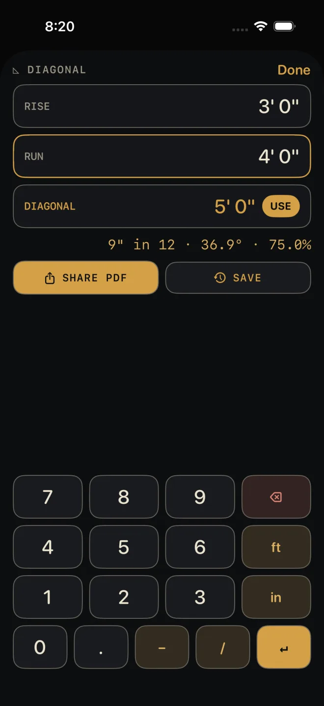

Diagonal
The ◺ diagonal key solves a right triangle. Enter any two of RISE, RUN and DIAGONAL and the third is worked out as you go, with the pitch beside it. Send the answer back to the calculator with one tap.
Step by step
 1
1

2 3 5- On the Dimensional Calculator, tap ◺ diagonal. The sheet opens with RISE outlined in gold — that is the field the keypad is typing into.
- Type the first side on the sheet's keypad and tap ↵. The outline moves to the next empty field. In the shot, RISE is 3' 0".
- Type the second side and tap ↵. The third field fills in, in gold, with a USE button on it. In the shot, RUN is 4' 0" and DIAGONAL solves to 5' 0" — with no empty field left, the gold outline stays on RUN.
- To give a different pair — say the diagonal and the run — tap the field you want first, then type.
- Tap USE to close the sheet and put the solved length on the calculator's display, ready for the next key. Tap Done to close without using it.
Reading the results
- The gold reading is the solved side. When the three sides work out exactly — a 3-4-5 triangle and its multiples — the answer is exact, like the 5' 0" in the shot. Otherwise it is marked ≈ and shown to the calculator's current fraction setting. The gold outline round a field is a different thing: it marks where the keypad is typing — RUN in the shot.
- The line under the fields is the pitch, from rise and run: inches of rise in 12, the angle in degrees, and the percent grade. For the 3-4-5 triangle in the shot it reads 9" in 12 · 36.9° · 75.0%. It shows as soon as rise and run are both known, whether you entered them or one was solved.
- The last two sides you entered are the knowns. Enter a third and the oldest one is dropped and solved again from the other two. That is how you change your mind without clearing the sheet.
Squaring a layout
The two legs do not have to be a rise and a run. Put the two sides of a rectangular layout in RISE and RUN, and DIAGONAL is the corner-to-corner measurement. Pull both diagonals on site; when they match that number the layout is square. Ignore the pitch line for this.
The diagonal solver is free. Once a side is solved, two buttons appear: SHARE
PDF prints the three sides and the pitch, and SAVE puts them in History. Both are
Pro; without it they read PDF — PRO and SAVE — PRO.
Common mistakes
- Typing a side and not tapping ↵. The number is not taken until you do.
- Typing into the wrong field. The gold outline shows where the keypad is going. Tap the field you want before you type.
- Entering a third side to "check" and losing the first. The sheet keeps only the last two you entered.
- Mixing up where rise and run are measured. Rise is plumb, run is level, and the diagonal is the sloped length between their ends.
If it doesn't work
- "the diagonal must be the longest side" — you entered a diagonal that is shorter than, or equal to, the other side. Check which field each number went into.
- Nothing solves. Only one side has been entered. Look for a field still reading "—" and a typed number still waiting for ↵.
- A red line appears above the keypad. The entry could not be read as a dimension. Backspace and re-type it — see Entering feet, inches and fractions.
Related
- Equal parts — the key beside it
- Angle tools
- Roof Rafter and Stairs — full calculators for the two most common rise-and-run jobs
- The Dimensional Calculator